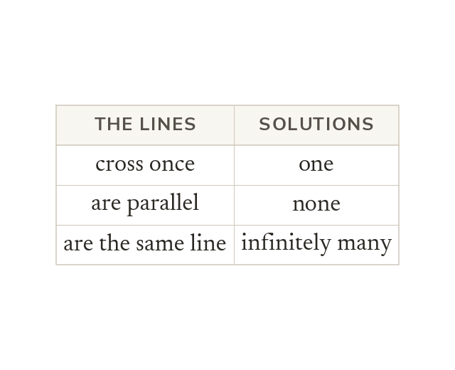

Three outcomes
Two straight lines cross once, never meet, or lie on top of each other. Parallel lines share a gradient and have no solution.
Two straight lines can cross once, never meet, or lie exactly on top of each other. Parallel lines share a gradient and never meet, so that pair has no solution.